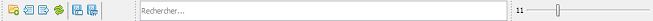

Interface utilisateur - Barre d'outils
DisToxic propose une barre d'outils qui vous aide à accéder plus rapidement aux fonctionnalités principales de DisToxic :

De gauche à droite, chaque bouton représente une fonctionnalité (de gauche à droite) :
- Nouveau : créé un nouveau projet disToxic.
- Enregistrer le fichier : enregistre le tableau sélectionné de l'onglet courant dans un nouveau fichier.
- Enregistrer le triplet enregistre les tableaux sélectionnés de l'onglet courant dans trois nouveaux fichiers différents.
- Importer : importe un projet existant dans l'espace de travail de DisToxic.
- Exporter : exporte un projet selectionné dans l'arbre de sélections (représentatif de l'espace de travail de DisToxic).
Une barre de recherche est également présente afin de pouvoir filtrer les données qui vous intéressent sur un des tableaux sélectionnés.
Enfin, la barre d'outils contient une barre de sélections qui vous permettre d'augmenter/diminuer la police de vos tableaux.